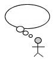
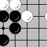

![[Everything Shii Knows]](../mediawiki/skins/common/images/wiki.png)
This is a website called Everything Shii Knows. By reading these pages you can learn a good amount of what I know. It's a real mess, kind of like an old study with books randomly stacked everywhere. So put on some good music and look around.
There are currently 580 articles/stubs on this website. For copyright details and stuff, visit my exciting about page.
Where should I start?
If you just want to have some fun, start with the diversions and come back later for the serious articles.
Below the break are some categories for you to browse. You can also enjoy the short lists of featured articles and articles that are better than Wikipedia.
What's new?
Some Notes About This Website (September 1, 2010)
New!! United States Presidential election, 2012
Categories

| |||||

|  | ||||
But enough about me... | |||||
The WikiWikiWorldThis wikis are approved by Shii! |
Links for wikifiddlers |